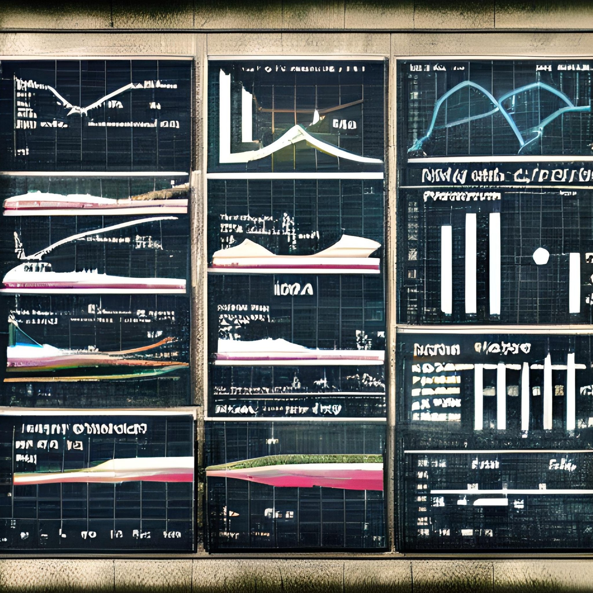

MATH
Our paper on the new Austrian hail hazard map is out. A digest.
DEV
GitHub made a cooldown the default for Dependabot version updates. Their number is 3 days, mine was 7, and I think there is a good reason to stay above the crowd.
DEV MISC
If your Deutsche Bahn ICE wifi is not loading the WifiOnICE connection page, the culprit is most likely an IP range collision.
Hej there! My name is Gregor, I was born in the beautiful Tyrolian Alps in 1986 and I reside near Innsbruck, Austria. I am a
software engineer
with a strong
DevOps
mindset,
data scientist,
researcher,
and
lecturer
with an academic background in mathematics and computer science.
I am passionate about sharing knowledge and love to jointly work on challenging problems.
Whether you are looking for assistance with a
complex technical challenge
aiming to
enhance your skills
guided by external expertise in a mentoring or workshop setting, or looking for a helping hand with a
research topic,
I would be thrilled to
connect
and explore potential collaborations.

In 2011 I attended the very first edition of the famous MOOC Artificial Intelligence by Sebastian Thrun and Peter Norvig and was proud to rank among the top 1000 students (160.000 signed up for the course). I was immediately captivated by AI related topics and in the following years I took every opportunity to upskill in this field. I attended related conferences, took more university and online courses and worked on many Data Science / AI projects professionally. Since 2019, I have been teaching in the Master's programme Data Science at the University of Innsbruck and since 2025 in the Master's programme Mechantronics at the MCI in Innsbruck. Starting in 2021, I began pursuing a PhD in Mathematics at the same university, focusing on explainable artificial intelligence and extreme value statistics.
The development of stable software packages is quite an art. I love to craft software, tweak algorithms, improve performance and stability. I am a DevOps evangelist and very keen about enabling developers to unlock their full potential. I hold a Bachelor degree in Computer Science and worked as a Senior Software Engineer for several years.
"Mathematics is the language in which God has written the universe" (Galileo Galilei). This might be exaggerated but having a profound understanding of mathematics is incredibly valuable, particularly in fields like AI and Data Science. As a graduate in Technical Mathematics I always strive to understand the theory and limits of the utilized methods. With a solid theoretical background and h ands-on experience in real-world settings, my toolbox is not limited to the blind application of modern AI tools.